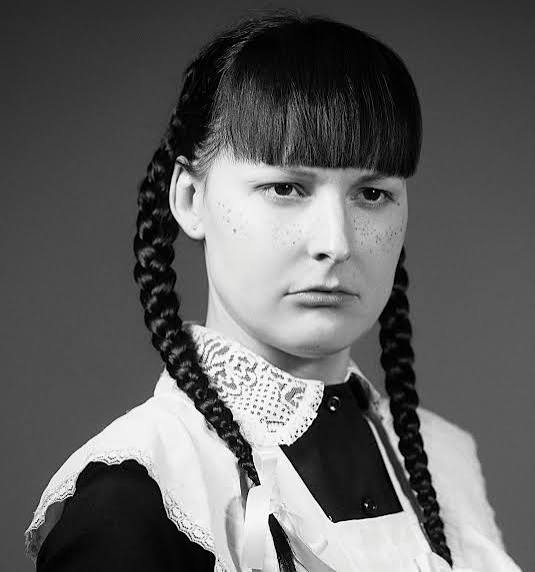

About the Author

Experimental Fiction. Dark Humor. Uncomfortable Subjects.
Audrey Szasz, also known as Zutka, is a London-based writer and novelist. Her work is published largely through independent presses, including Amphetamine Sulphate and Infinity Land Press. She writes experimental fiction that deals with sexuality, violence, alienation, and the more disturbing aspects of human behavior.
Her books include Tears of a Komsomol Girl (2020), Invisibility: A Manifesto (2020), Zealous Immaculate (2022), and Counterillumination (2023). Her writing often uses fragmented narration, unusual imagery, and unreliable narrators. Rather than following conventional plot structures, her books move through the thoughts and experiences of characters who are often difficult to understand or sympathize with.
Her more recent work includes Rubber Anne, a multimedia project released in 2024, and Teleplasm, published in 2025. Szasz is also associated with the contemporary independent and experimental literary scene, where small presses provide space for writing that falls outside mainstream publishing.
Explore Her Work
Szasz's books are published through independent presses and are often available in limited editions. Invisibility: A Manifesto and Tears of a Komsomol Girl are good starting points for exploring her writing.